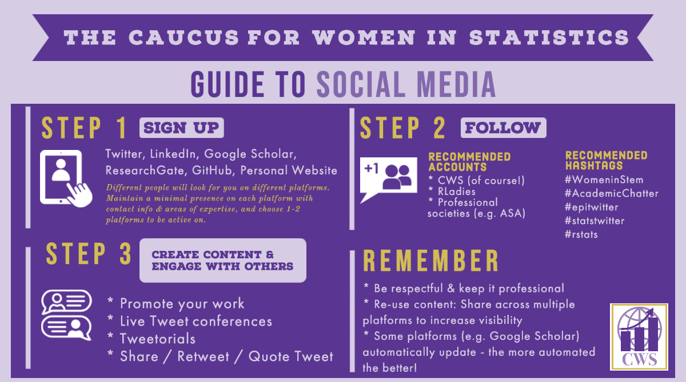

In March 2020, I moderated the Caucus
for Women in Statistics (CWS) Lunch & Learn on creating a
professional online presence & navigating social media, in which
Drs. Ellie Murray, Claire Bowen & Sam Tyner shared their experience
navigating the multitude of platforms available for managing your
presence online. In this blog post will highlight the key discussion
points and takeaways. The full video of the Lunch & Learn is
available here.
Creating a professional online presence
Having a professional online presence allows people to easily find
you and identify your areas of expertise. Though always important,
having information online that showcases your research skills and areas
of expertise is especially important when searching for a job and
submitting a grant, when people may be looking into your background a
bit more closely. Having a professional online presence helps to
legitimize an application, and also allows journalists to find you when
they are looking for experts in your field.
Personal websites & online resumes
There are a few options for creating and hosting a personal website.
The Live Free or Dichotomize blog provides a great tutorial on How
to make an R Markdown website (with RStudio!) and GitHub or Netlify.
For those wishing to get into more customizability, Dr. Bowen created
her website using HTML
and CSS, and used bluehost for
her website.
At a minimum, your personal website should include your contact
information and areas of expertise. Bonus points if it also includes
your CV, a blog, links to previous talks that you’ve given, and a bit
about you personally. The personal component gives interviewers and
colleagues insight into who you are as a person beyond your professional
profile, and often generates some interesting topics for discussion
during an interview.
Dr. Sam
Tyner’s resume is a great example of what you can do with
blogdown::pagedown in R. I was so inspired by hers, I
created one myself!
Content
The panelists didn’t have separate personal and professional social
media accounts on the same platform (i.e. a professional Twitter and a
personal Twitter). That said, they pointed out that all of your accounts
don’t have to be both personal and professional. It’s okay to
keep some platforms entirely personal (such as Facebook and Instagram),
but if you are going to use a platform as both personal and
professional, it’s important to be mindful of the content you are
sharing. Dr. Murray remembered that when she first started using
Twitter, her first followers were her PhD adviser and her mom, and those
were her guideposts for determining what kind of content she wanted to
share.
Rather than generating content for each platform individually, it’s
most efficient to re-use material across platforms, especially because
there are different audiences on each platform. For example, write a
Tweetorial about something that you’re already working on or to promote
a longer form Medium post or blog post. This helps to reduce the number
of hours spent working on your online presence, while still increasing
your visibility.
It can be a bit intimidating to break into social media and figuring
out what thoughts to put out into the world. Dr. Bowen shared that one
way to start to get comfortable is to find your niche (in statistics,
this might include the American Statistical Association, the Caucus for
Women in Statistics, RLadies, #epitwitter, and #AcademicChatter). Once
you’ve found this group, a safe place to start is by sharing the content
that they have already posted and building up to sharing your own
content. Dr. Murray pointed out that it’s okay to start simple. There’s
a wide audience on the Internet, providing an opportunity to start
wherever you feel comfortable.
Navigating Challenges that Arise
When becoming more visible online, it’s almost inevitable that some
disagreements will arise and the internet trolls will emerge.
Dr. Murray said that the with a small number of characters available
per post on Twitter in particular, it’s possible that people are coming
across as harsher than intended. A majority of the time, giving people
this benefit and responding accordingly resolves any potential tension
and prevents an interaction from escalating.
Dr. Tyner shared the wisdom that the mute button is your friend
saying to, “Mute early and often.” She also recommended putting your
degree in your Twitter name to automatically demonstrate expertise.
Dr. Murray lists her pronouns as “she, her, Dr” on Twitter as a clever
way to get this point across.
Summary
A huge thank you to Drs. Ellie
Murray, Claire Bowen
& Sam Tyner for sharing
their thoughts on creating a professional online presence and navigating
social media for the March Caucus for Women in Statistics Lunch &
Learn. Check out the recording
and visual summary below of the panel’s fantastic recommendations, and
visit the Caucus for Women in Statistics
website for information about future Lunch & Learns!
